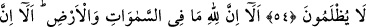

ALLAH’IN VAADİ GERÇEKTİR
54. Zulmeden herkes, yeryüzünde ne varsa hepsi kendisinin olsaydı onu fedâ
ederdi. Azabı gördükleri zaman içlerinde pişmanlık duyarlar. Onların aralarında
adaletle hükmedilir, asla haksızlığa uğratılmazlar.
55. İyi bil ki göklerde ve yerde ne varsa hepsi Allah’ındır. İyi bil ki Allah’ın vaadi
gerçektir, fakat onların çoğu bilmezler.
56. O, hem diriltir, hem de öldürür ve siz sadece O’na döndürüleceksiniz.
“Zulmeden” şirk koşan “herkes, yeryüzünde” hazine ve mal olarak “ne varsa, hepsi
kendisinin olsaydı” azabdan kurtulmasına karşılık olarak “onu feda ederdi.” O
malvarlığını azabdan kurtuluş fidyesi yapardı. “Azabı gördükleri zaman, içlerinde”
yaptıkları zulümlere “pişmanlık duyarlar.” Yani azabı gözleriyle gördükleri zaman,
ileri derecedeki hayretlerinden dolayı tıpkı asılmaya götürülen kişi gibi korkudan
konuşmaktan âciz kalarak pişmanlıklarını gizleyip açığa vuramazlar.
el-Kevâşî’de “__WORD__” sözünün mânâsı şöyle izah edilir: “Pişmanlıklarını açığa
vururlar. Çünkü o gün, sabredilecek bir gün değildir. et-Tibyân’da ise şöyle denilir: “__WORD__” kelimesi, zıt mânâlı kelimelerdendir; yani hem gizlemek hem de açığa vurmak
mânâsına gelebilir.
“Onların aralarında adaletle hükmedilir,” müşriklerden ve başkalarından olan
zalimler arasında gerek Allah hakkı gerekse kul hakkı konusunda hak bâtıldan ayrılarak
hüküm ve kaza icra edilir. Hak yolda olanlara da bâtıl yolda olanlara da kendilerine
layık şekilde davranılır. Bu zalimler dûçar edildikleri azap konusunda “asla haksızlığa
uğratılmazlar.” Bu azap bilakis kendi zulümlerinin gereklerinden ve ayrılmaz
parçalarındandır. el-İrşâd’da böyle geçmektedir.
Kâdî der ki: “Âyette tekrar yoktur. Çünkü önceki, peygamberle onları yalanlayanlar
arasındaki hükümdür. İkincisi ise müşriklerin şirklerinden dolayı uğrayacakları
cezadır.”